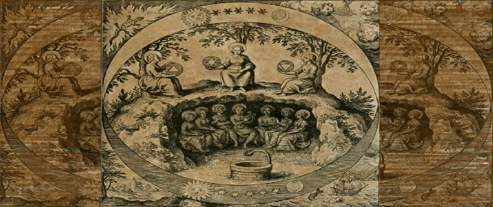

6° Princípio: A Causa e Efeito

"Na sexta lei hermética, compreendemos que as coincidências nada mais são do que acontecimentos nos quais as causas ainda não foram esclarecidas. Toda ação tem uma reação e nada é por acaso. Ao dominar os princípios desta lei, é possível ser o agente causador e não apenas sentir os efeitos, de modo que possamos propagar o bem. Quando tal mecanismo é dominado, nos tornamos mestres de nós mesmos."